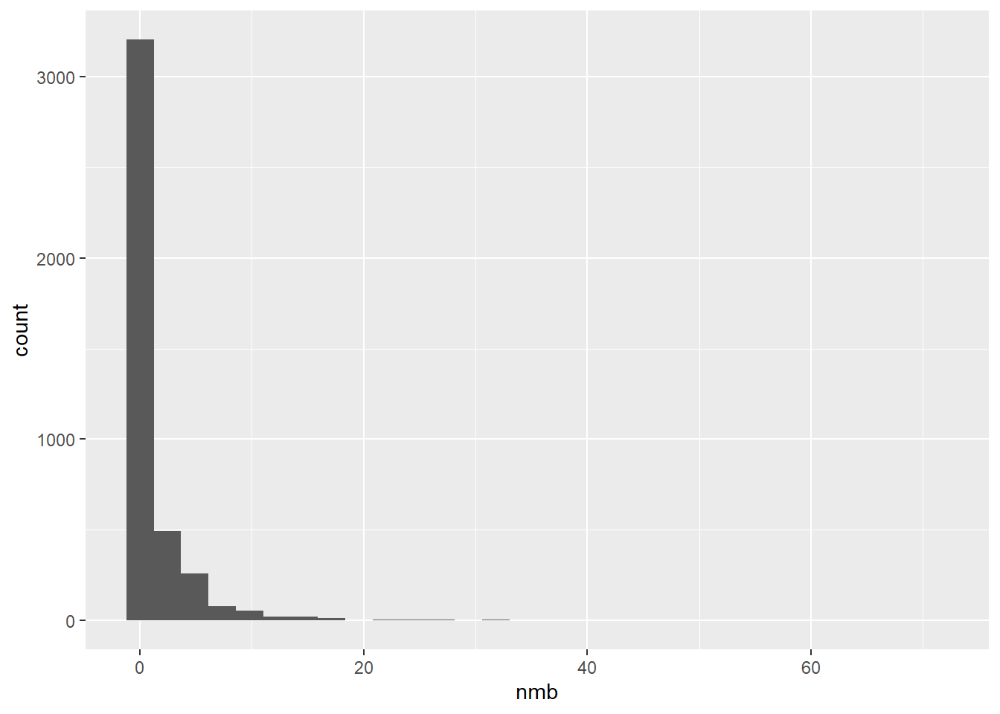
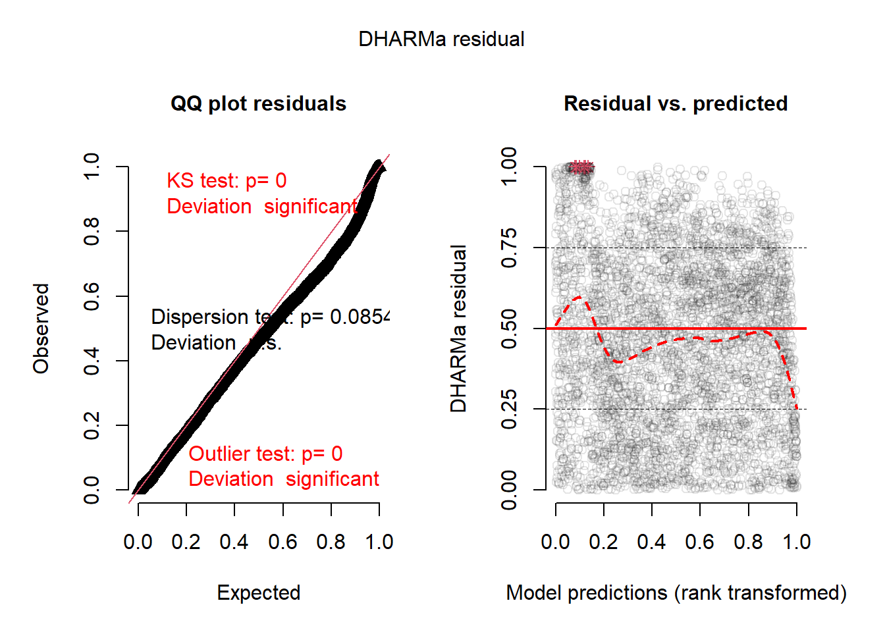
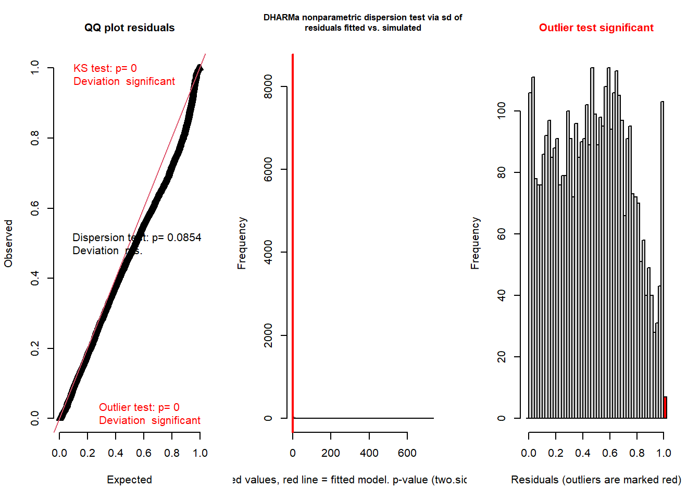
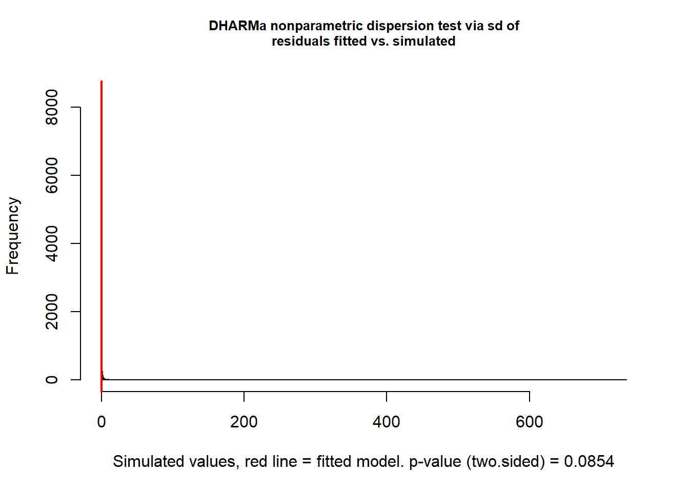
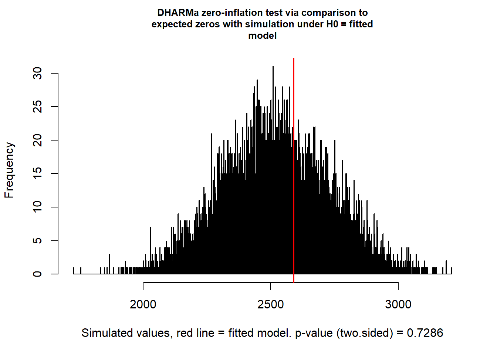
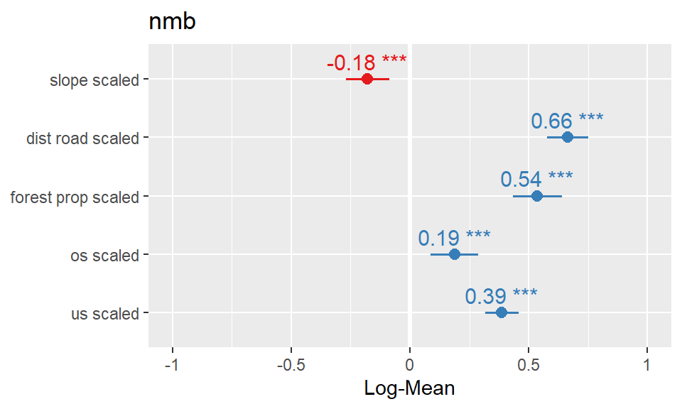
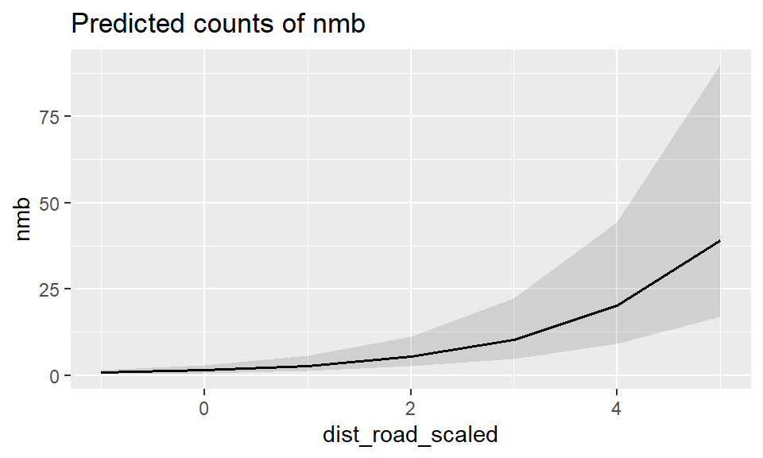

# neue Packages: DHARMa, car, MASS, ROCR, sjPlot, sjstats, rms, ggeffects,
# cowplot
ipak <- function(pkg) {
new.pkg <- pkg[!(pkg %in% installed.packages()[, "Package"])]
if (length(new.pkg))
install.packages(new.pkg, repos = "http://cran.us.r-project.org", dependencies = TRUE)
sapply(pkg, require, character.only = TRUE)
}
packages <- c("lme4", "bbmle", "MuMIn", "tidyverse", "DHARMa", "car", "MASS", "ROCR",
"sjPlot", "rms", "ggeffects", "sjstats", "cowplot", "glmmTMB", "performance",
"kableExtra")
ipak(packages)7. Nutzungsintensität
Neue packages die wir für die Modelle und die Diagnostics brauchen
DF_mod_day <- read_delim("data/Aufgabe4_Datensatz_Habitatnutzung_Modelle_20211101_moodle.csv",
delim = ";") %>%
filter(time_of_day == "day") %>%
mutate(slope_scaled = scale(slope), us_scaled = scale(us), os_scaled = scale(os),
forest_prop_scaled = scale(forest_prop), dist_road_scaled = scale(dist_road_all),
dist_road_only_scaled = scale(dist_road_only), dist_build_scaled = scale(dist_build),
id = as.factor(id))- Ursprüngliche Funktion und Modelformel
# glmer(formula, data = , family = binomial)
# 1) formula:
# Abhängige Variable ~ Erklärende Variable + Random Factor
# In unseren Modellen kontrollieren wir für individuelle Unterschiede bei den Rehen
# indem wir einen Random Factor definieren => (1 | id)
# 2) data:
# euer Datensatz
# 3) family:
# binomial
# Verteilung der abhängigen Variable bei der Nutzungsintensität aus?
ggplot(DF_mod_day, aes(nmb)) + geom_histogram()
- Hinsichtlich der Nutzungsintensität müssen wir die Formel erweitern:
# Erweiterung um einen sog. Offset-Term, der hier gebraucht wird, um für die
# Anzahl der GPS Lokalisationen (in der Spalte GPStot aufgeführt) zu korrigeren
# (eigentlich eine Skalierung der abhängigen Variable um die relative
# Nutzungsintensität zu modellieren)
f_count <- nmb ~ slope_scaled + dist_road_scaled + forest_prop_scaled + os_scaled +
us_scaled + dist_build_scaled + offset(log(GPStot)) + (1 | id)
### Für die Nutzungsintensität brauchen wir ein neues package (glmmTMB) um das
### GLMM fitten zu können. glmer kann leider mit der negativ binomial -
### Verteilung nicht in jedem Fall umgehen.
m <- glmmTMB(f_count, data = DF_mod_day, family = glmmTMB::nbinom2(), na.action = "na.fail")
# Das Modell in die dredge-Funktion einfügen (siehe auch unbedingt ?dredge)
all_m <- dredge(m)
avgmodel <- model.avg(all_m, rank = "AICc", subset = delta < 2)
summary(avgmodel)- Model testing for over/underdispersion, zeroinflation and spatial autocorrelation following the DHARMa package.
- unbedingt die Vignette des DHARMa-Package konsultieren: Link
f_count <- nmb ~ slope_scaled + dist_road_scaled + forest_prop_scaled + os_scaled +
us_scaled + offset(log(GPStot)) + (1 | id)
### Für die Nutzungsintensität brauchen wir ein neues package (glmmTMB) um das
### GLMM fitten zu können. glmer kann leider mit der negativ binomial -
### Verteilung nicht in jedem Fall umgehen.
m_day_count <- glmmTMB(f_count, data = DF_mod_day, family = glmmTMB::nbinom2())
summary(m_day_count) Family: nbinom2 ( log )
Formula: nmb ~ slope_scaled + dist_road_scaled + forest_prop_scaled +
os_scaled + us_scaled + offset(log(GPStot)) + (1 | id)
Data: DF_mod_day
AIC BIC logLik deviance df.resid
11478.3 11529.0 -5731.2 11462.3 4177
Random effects:
Conditional model:
Groups Name Variance Std.Dev.
id (Intercept) 1.608 1.268
Number of obs: 4185, groups: id, 12
Dispersion parameter for nbinom2 family (): 0.376
Conditional model:
Estimate Std. Error z value Pr(>|z|)
(Intercept) -6.02497 0.36778 -16.382 < 2e-16 ***
slope_scaled -0.17888 0.04656 -3.842 0.000122 ***
dist_road_scaled 0.66387 0.04489 14.788 < 2e-16 ***
forest_prop_scaled 0.53649 0.05207 10.303 < 2e-16 ***
os_scaled 0.18699 0.05157 3.626 0.000288 ***
us_scaled 0.38644 0.03568 10.832 < 2e-16 ***
---
Signif. codes: 0 '***' 0.001 '**' 0.01 '*' 0.05 '.' 0.1 ' ' 1tab_model(m_day_count, transform = NULL, show.se = T)| nmb | ||||
|---|---|---|---|---|
| Predictors | Log-Mean | std. Error | CI | p |
| (Intercept) | -6.02 | 0.37 | -6.75 – -5.30 | <0.001 |
| slope scaled | -0.18 | 0.05 | -0.27 – -0.09 | <0.001 |
| dist road scaled | 0.66 | 0.04 | 0.58 – 0.75 | <0.001 |
| forest prop scaled | 0.54 | 0.05 | 0.43 – 0.64 | <0.001 |
| os scaled | 0.19 | 0.05 | 0.09 – 0.29 | <0.001 |
| us scaled | 0.39 | 0.04 | 0.32 – 0.46 | <0.001 |
| Random Effects | ||||
| σ2 | 5.64 | |||
| τ00 id | 1.61 | |||
| ICC | 0.22 | |||
| N id | 12 | |||
| Observations | 4185 | |||
| Marginal R2 / Conditional R2 | 0.131 / 0.324 | |||
# Residuals werden über eine Simulation auf eine Standard-Skala transformiert
# und kännen anschliessend getestet werden. Dabei kann die Anzahl Simulationen
# eingestellt werden (dauert je nach dem sehr lange)
simulationOutput <- simulateResiduals(fittedModel = m_day_count, n = 10000)
# plotting and testing scaled residuals
plot(simulationOutput)
testResiduals(simulationOutput)
$uniformity
Asymptotic one-sample Kolmogorov-Smirnov test
data: simulationOutput$scaledResiduals
D = 0.082405, p-value < 2.2e-16
alternative hypothesis: two-sided
$dispersion
DHARMa nonparametric dispersion test via sd of residuals fitted vs.
simulated
data: simulationOutput
dispersion = 0.012257, p-value = 0.0854
alternative hypothesis: two.sided
$outliers
DHARMa outlier test based on exact binomial test with approximate
expectations
data: simulationOutput
outliers at both margin(s) = 9, observations = 4185, p-value =
2.603e-07
alternative hypothesis: true probability of success is not equal to 0.00019998
95 percent confidence interval:
0.0009838195 0.0040784476
sample estimates:
frequency of outliers (expected: 0.0001999800019998 )
0.002150538 $uniformity
Asymptotic one-sample Kolmogorov-Smirnov test
data: simulationOutput$scaledResiduals
D = 0.082405, p-value < 2.2e-16
alternative hypothesis: two-sided
$dispersion
DHARMa nonparametric dispersion test via sd of residuals fitted vs.
simulated
data: simulationOutput
dispersion = 0.012257, p-value = 0.0854
alternative hypothesis: two.sided
$outliers
DHARMa outlier test based on exact binomial test with approximate
expectations
data: simulationOutput
outliers at both margin(s) = 9, observations = 4185, p-value =
2.603e-07
alternative hypothesis: true probability of success is not equal to 0.00019998
95 percent confidence interval:
0.0009838195 0.0040784476
sample estimates:
frequency of outliers (expected: 0.0001999800019998 )
0.002150538 # The most common concern for GLMMs is overdispersion, underdispersion and
# zero-inflation.
# separate test for dispersion
testDispersion(simulationOutput)
DHARMa nonparametric dispersion test via sd of residuals fitted vs.
simulated
data: simulationOutput
dispersion = 0.012257, p-value = 0.0854
alternative hypothesis: two.sided# test for Zeroinflation
testZeroInflation(simulationOutput)
DHARMa zero-inflation test via comparison to expected zeros with
simulation under H0 = fitted model
data: simulationOutput
ratioObsSim = 1.0277, p-value = 0.7286
alternative hypothesis: two.sided# test for spatial Autocorrelation
dM = as.matrix(dist(cbind(DF_mod_day$x, DF_mod_day$y)))
testSpatialAutocorrelation(simulationOutput, distMat = dM, plot = F)Error in if (obs <= ei) 2 * pv else 2 * (1 - pv): Fehlender Wert, wo TRUE/FALSE nötig ist# Testen auf Multicollinearität (dh zu starke Korrelationen im finalen Modell,
# zB falls auf Grund der ökologsichen Plausibilität stark korrelierte Variablen
# im Modell)
#--> funktioniert bei glmmTMB Modellen mit dieser Funktion aus dem performace package:
check_collinearity(m_day_count)# Check for Multicollinearity
Low Correlation
Term VIF VIF 95% CI Increased SE Tolerance Tolerance 95% CI
slope_scaled 1.41 [1.36, 1.47] 1.19 0.71 [0.68, 0.74]
dist_road_scaled 1.06 [1.03, 1.10] 1.03 0.94 [0.91, 0.97]
forest_prop_scaled 1.66 [1.59, 1.73] 1.29 0.60 [0.58, 0.63]
os_scaled 2.03 [1.94, 2.13] 1.42 0.49 [0.47, 0.52]
us_scaled 1.21 [1.17, 1.26] 1.10 0.83 [0.80, 0.85]- AUC funktioniert nicht bei nicht-binären abhängigen Variablen, daher müssen wir eine andere Möglichkeit finden um den Goodness-of-fit der Modelle abzuschätzen:
# Zitat B.Bokler 2013: 'GLMMs are still part of the statistical frontier, and
# not all of the answers about how to use them are known (even by experts)'
r2(m_day_count)# R2 for Mixed Models
Conditional R2: 0.324
Marginal R2: 0.131- Plots der vorhergesagten relativen Nutzungsintensität funktionieren nach dem selben Prinzip das wir bereits kennen:
# graphische Darstellung der gesamten Modellresultate
plot_model(m_day_count, transform = NULL, show.values = TRUE, value.offset = 0.3)
# Plotten der vorhergesagten Wahrscheinlichkeit, dass ein Kreis besetzt ist, in
# Abhängigkeit der erklärenden Variable basierend auf den Modellresultaten.
plot_model(m_day_count, type = "pred", terms = "dist_road_scaled")
# Problem: skalierte Variablen lassen sich nicht so ohne Weiteres plotten, hier
# ein quick-and-dirty hack um das Problem zu umgehen. Die Einstellungen müssen
# für jede Variable geändert werden
p <- plot_model(m_day_count, type = "pred", terms = "dist_road_scaled")
labels <- round(seq(floor(min(DF_mod_day$dist_road_all)), ceiling(max(DF_mod_day$dist_road_all)),
length.out = 6), 2)
p <- p + scale_x_continuous(breaks = c(-1, 0, 1, 2, 3, 4), labels = c(labels))
p